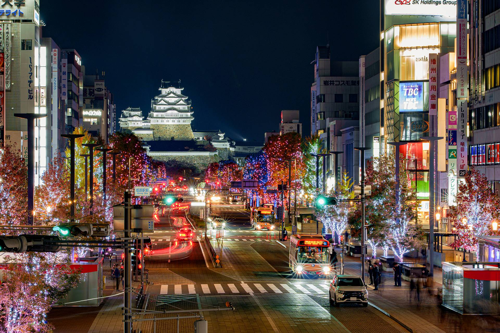
姫路忍町は陽が落ちてから、
この町は始まる。
This town begins
after dark.
昭和がまだ動いている町で、昭和の家に泊まる。 Stay in an old Showa-era house, in a town where that era is still alive.
01 — WHERE TO SLEEP
観光を楽しんだあと、
どこに泊まるか。
After the sightseeing,
where do you sleep?
姫路城を見て、神戸まで足をのばして、書写山にのぼる。昼は思いきり観光してかまいません。この宿がおすすめしたいのは、そのあと、あえて姫路駅そばの繁華街に帰ってくるという選び方です。 See Himeji Castle, take a day trip to Kobe, climb Mt. Shosha. Spend the day however you like. What this house suggests is the choice you make afterwards: come back and sleep in the lively streets by Himeji Station.
観光地の中にある宿は、夜になると静かになります。そこから食事に出ようとすると、また移動が要ります。姫路駅の近くに泊まれば、電車を降りてから10分歩くだけ。荷物を置いて、そのまま夜の町に出られます。 Hotels inside sightseeing districts go quiet after dark, and going out for dinner means travelling again. Stay near Himeji Station and it is a ten-minute walk from the platform: drop your bags and step straight into the evening.
| 姫路城Himeji Castle | 歩いて行ける距離（所要時間 確認中）Walkable (time TBC) |
|---|---|
| 神戸（三ノ宮）Kobe (Sannomiya) | JR新快速でおよそ40分（確認中）About 40 min by JR rapid service (TBC) |
| 書写山圓教寺Engyoji, Mt. Shosha | バスとロープウェイ（所要時間 確認中）Bus and ropeway (time TBC) |
| 大阪・岡山Osaka / Okayama | 新幹線が姫路駅に停まりますShinkansen stops at Himeji Station |
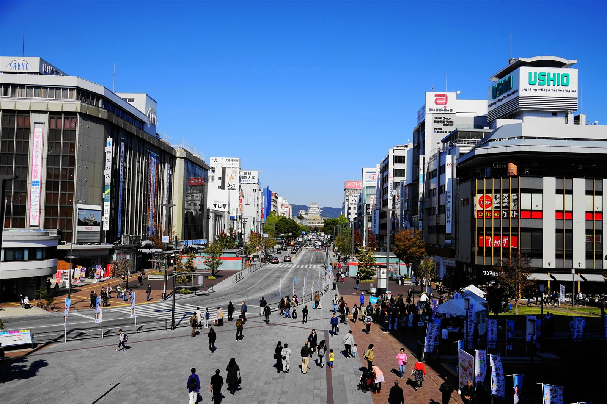
昼は観光地へ。夜は、観光客だけの町ではないところへ。 Spend the day where the visitors go. Spend the night where they do not.
02 — THE WALK
駅から、歩いて10分。
その10分に、この宿の価値があります。
A ten-minute walk from the station—
and those ten minutes are the point.
宿のまわりのお店を地図にまとめています。ピンをタップすると、お店の名前と場所が見られます。 The map shows the house and the places to eat around it. Tap a pin for details.
- 00:00 JR姫路駅JR Himeji Station 新幹線もここに停まります。荷物を持ったまま歩けます。Shinkansen stops here. Easy walk with luggage.
- 00:04 灯りが見えはじめるThe lights come on 小さな店の照明が一軒ずつ点いて、町の表情が変わります。One by one, small shops light up and the street changes.
- 00:08 暖簾の並ぶ通りA street of noren curtains 海鮮、焼き鳥、炉端、おばんざい。チェーン店ではない店ばかり。Seafood, yakitori, robata, obanzai—independent shops, not chains.
- 00:10 BESSO姫路忍町BESSO Himeji Shinobumachi 飲んだあと、タクシーを探さずに歩いて帰れます。After dinner, walk home. No taxi needed.
03 — THE NIGHT
決めずに、宿を出る。 Leave the house without a plan.
この町についてAbout the neighbourhood
忍町は、姫路駅の西に広がる「旧市（きゅうし）エリア」のまんなかにあります。ここはかつて、市場を中心に栄えた町でした。今も日々の暮らしを支える商店が点在し、観光向けに作られた町ではなく、暮らしの続きとして歩ける町です。 Shinobumachi sits in the heart of the old market district west of Himeji Station. The area grew up around a market, and shops that serve everyday life are still scattered along its streets. It is a neighbourhood you walk through as part of daily life, not a place built for visitors.
駅や大手前通りからも近く、ここ数年は、空き店舗を活かした小さな個人店が少しずつ増えています。新しい店と昔からの店が、同じ通りに並んでいます。 It is close to the station and Otemae-dori, and in recent years small independent shops have been opening in former vacant units. New places and old ones stand side by side.
この町のことは、地域のウェブマガジン「しのくぼ」でも読めます。→ しのくぼ You can read more about the area in the local web magazine Shino-kubo. → Shino-kubo
夕方に忍町を歩くと、正直「あれ、こんなところ？」と思います。けれど陽が落ちて、お店の照明が一軒ずつ点きはじめると、町が一変します。予約もなし、目的もなし。外から見える灯りに導かれて、良さそうな店の暖簾をくぐる。そんな夜が、この町では成立します。 Walk through Shinobumachi in the afternoon and you may wonder what the fuss is about. Then the sun goes down, the shop lights come on one by one, and the town becomes another place. No reservations, no plan—just follow the lanterns and pull back the curtain of whichever place looks good.
-
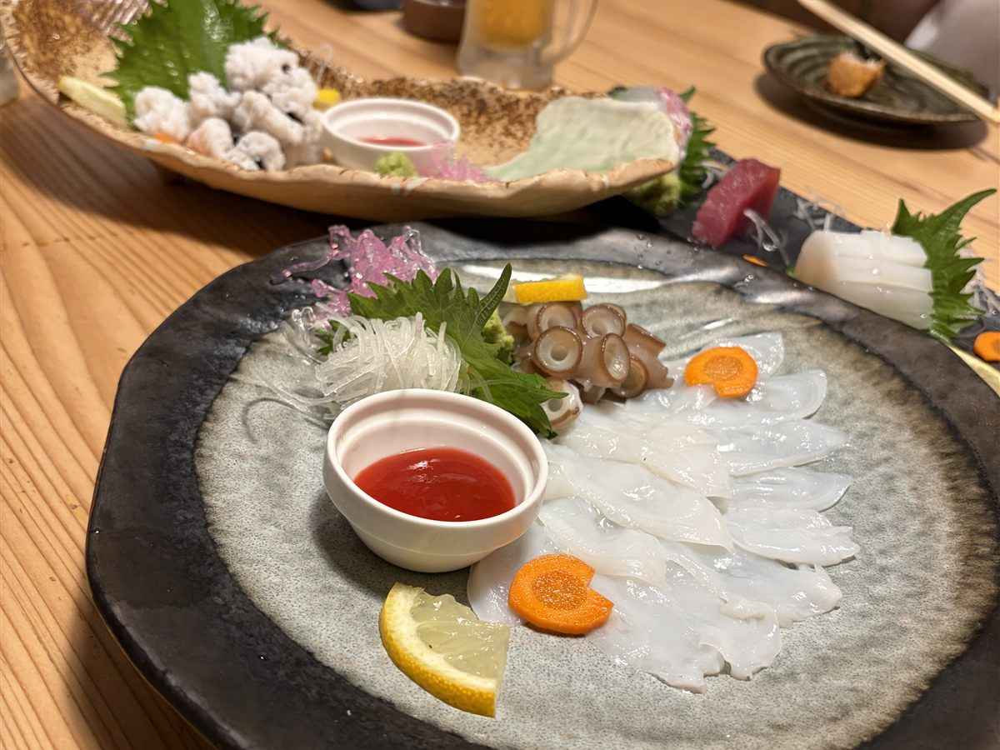
海鮮Seafood
瀬戸内の魚を出す店が、歩いて数分の範囲にいくつもあります。Several places serving Seto Inland Sea fish, all within a few minutes on foot.
-
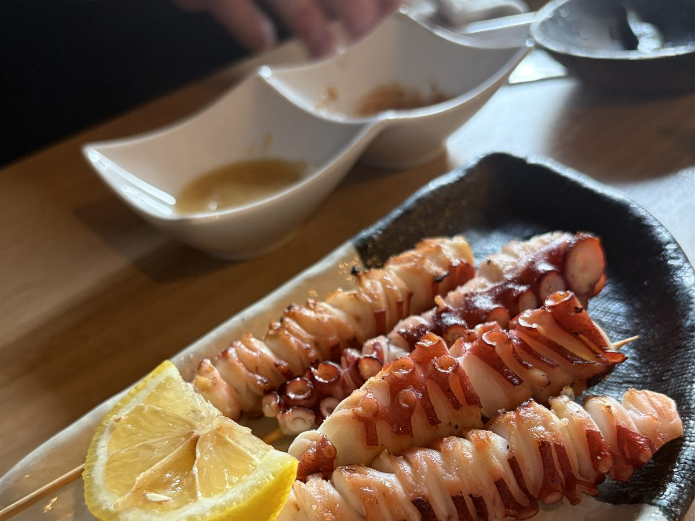
焼き鳥・炉端Yakitori & Robata
炭の匂いで店が分かります。行列ができている店もあります。You will smell the charcoal before you see the sign. Some have queues.
-
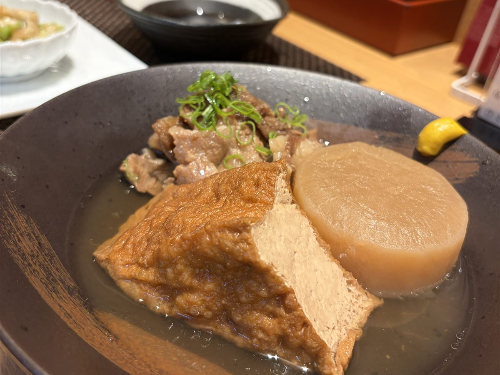
姫路おでん・ひねポンHimeji Oden & Hinepon
姫路の名物を、観光地の店ではなく地元の人が並ぶ店で。Local specialities, eaten where locals eat rather than where tourists do.
-
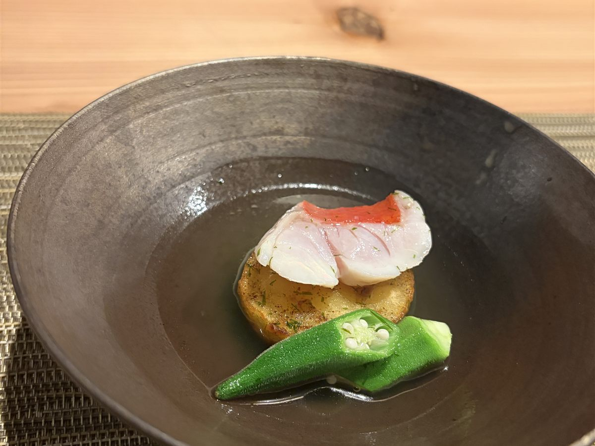
おばんざいObanzai
ひとりでも、大人数でも。気の良いオーナーがいる店ばかりです。Good for one guest or eight. The owners talk to you.
-
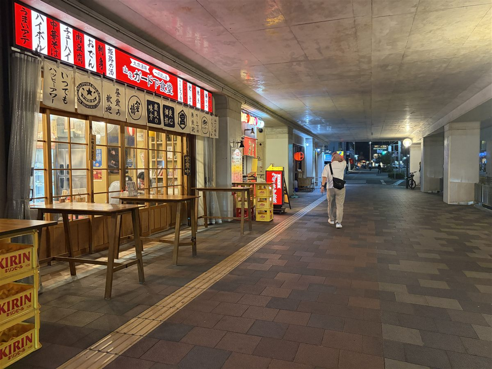
昼は、買い出しにDaytime: shop for dinner
近所の商店で食材を買って、台所で作って食べることもできます。Buy ingredients nearby and cook in the kitchen.
-
駅西エリアのお散歩マップ（PDF）
しのくぼ ポータルサイトで配布中 →Walking map of the station-west area (PDF)
Free on the Shino-kubo portal →この町の案内所としてYour guide to the street
どの店が何の店で、いつ開いていて、どう入ればいいのか。多言語のローカルマップをお渡しします。What each shop serves, when it opens, how to walk in—we hand you a local map in your language.
04 — THE HOUSE
帰ってきたら、
畳の部屋に集まる。
Come home,
and gather on the tatami.
外でさんざん飲んで、笑って帰ってきたあと、畳の部屋にみんなで集まる。買ってきたお菓子や飲み物を広げて、その日あったことを一晩中しゃべっている。 After a long evening out, everyone ends up in the same tatami room, snacks and drinks spread on the floor, talking about the day until it is very late.
ホテルなら、ロビーで「じゃ！」と言ってそれぞれの部屋に戻ります。けれどこの宿では、戻らなくていい。他人と顔を合わせないための一棟貸しではなく、仲間と離れないための一棟貸しです。 In a hotel you say goodnight in the lobby and go to separate rooms. Here you do not have to. This is not a private house for avoiding strangers—it is a house for not having to split up.
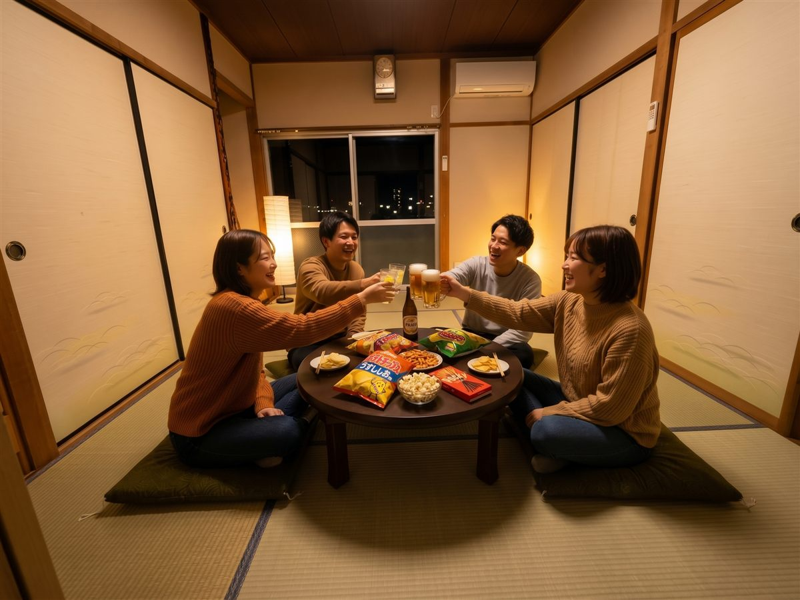
古いから直す、ではなく
昭和だから残す。
Not “old, so fix it”—
“Showa, so keep it.”
家の中を新しくすることは目指しませんでした。廊下と階段のカーペットを剥がしたら元の木が出てきたので、張り替えずに磨いて塗り直して使っています。柱も天井もそのまま残し、畳とフスマだけを新しくして、キッチンを入れました。 We did not set out to make the house new. When we pulled up the carpet in the hallway and stairs, the original wood was underneath, so we sanded and refinished it instead of replacing it. The posts and ceilings stayed. We replaced the tatami and sliding doors, and put in a kitchen.
ただし、残したのは見た目と雰囲気だけです。給排水も電気もガスも入れ替えました。火災報知器も誘導灯も、消防の基準どおりに設置しています。清潔さと安全は、昭和である理由になりません。 What we kept is the look and the feeling. The plumbing, wiring and gas are all new, and fire alarms and emergency lighting are installed to code. Being old is no excuse on cleanliness or safety.
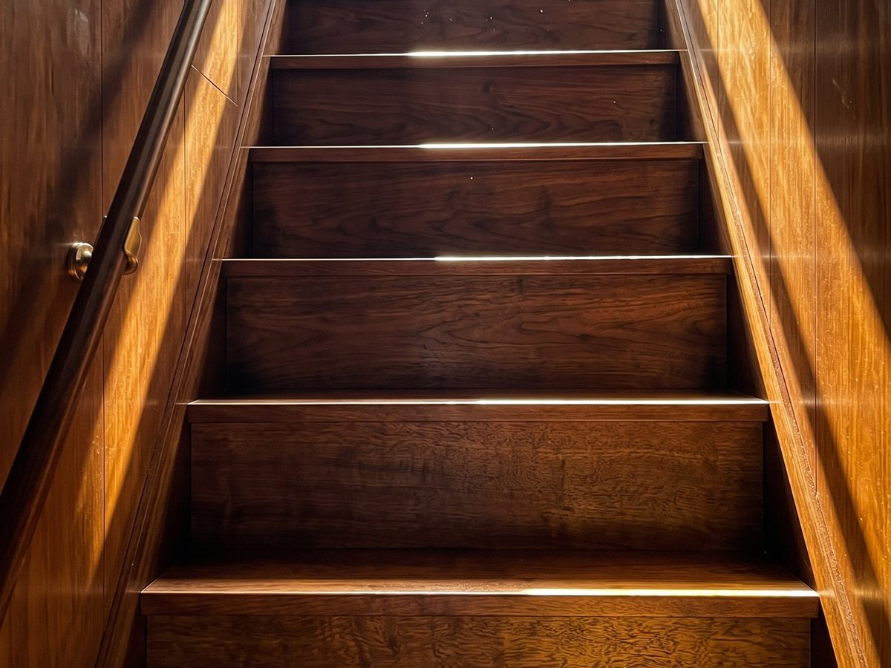
05 — ROOMS
お部屋と設備Rooms & Amenities
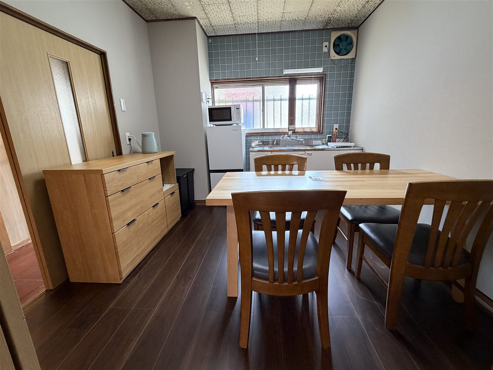
1階 ダイニングキッチンDining kitchen (1F)
調理器具・食器を備えています。
※お鍋、お皿、コップ等の最小限のご用意です。Cookware and tableware provided.
* Pots, plates, cups and the like, kept to the minimum.
1階 和室Tatami room (1F)
みんなが集まる居間です。1階には、4人分のお布団を用意しています。昔ながらの押し入れから、お客さまご自身でお布団を出してご用意いただきます。The living room where everyone gathers. Futons for four are provided on the ground floor; please take them out of the traditional oshiire closet and lay them out yourselves.

2階 和室Tatami room (2F)
お布団を敷いてお休みいただきます。2階には、4人分のお布団を用意しています。Futons are laid out for sleeping. Futons for four are provided on the second floor.
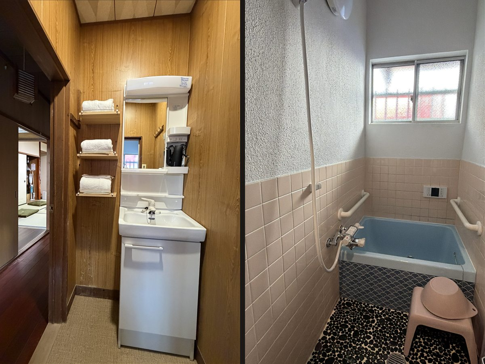
水まわりは、昔ながらの造りBath and toilet, the traditional way
一体のユニットではありません。お風呂、洗面脱衣所、トイレが、それぞれ分かれています。お風呂は大浴槽ではなく、大人が1人で入るタイプです。Not a one-piece unit: the bath, the washroom/changing area and the toilet are separate. The bath is not a large communal tub; it is sized for one adult at a time.
台所は、最小限。町が、台所です。A minimal kitchen. The town is your kitchen.
キッチンの食器は、必要最小限です。この宿は、ここで料理をしていただくための宿というより、しのくぼの町（忍町・久保町）を楽しんでいただくための宿だからです。食事は、町へ食べ歩きに出かけて。この「BESSO姫路忍町」は、帰ってきてくつろぐ場所として使ってください。 The tableware in the kitchen is kept to the minimum. This house is less a place to cook than a base for enjoying the Shino-kubo neighbourhood (Shinobumachi and Kubomachi). Eat your way around town, and come back to BESSO Himeji Shinobumachi to relax.
長期のご滞在にも向いた町です。ぶらりと食事に出られる店が、歩いてすぐの場所にあります。 It is a neighbourhood that also suits longer stays, with places to drop in for a meal within a short walk.
-
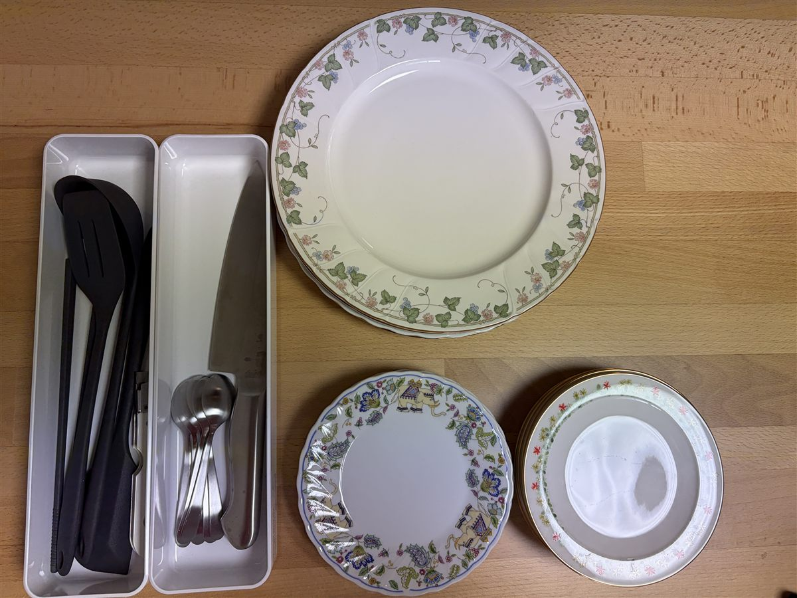
食器は、必要なだけJust what you need
お茶を淹れたり、買ってきたものを温めたり。それに必要な分だけを備えています。Enough for making tea or warming up something you bought—and no more.
-
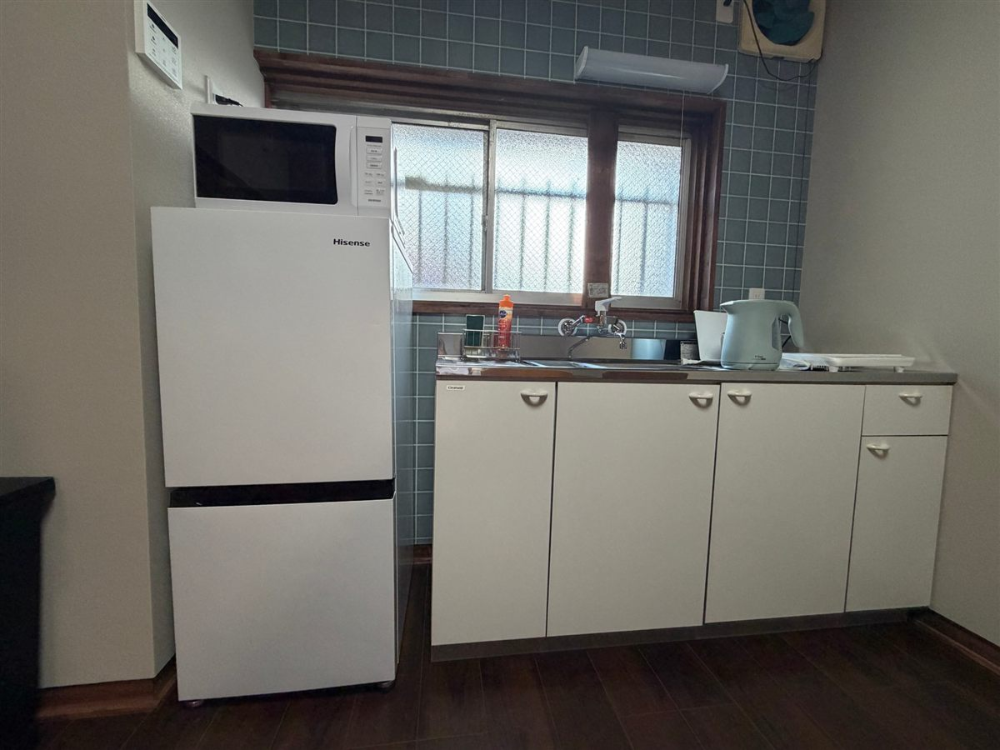
温める、冷やすWarm it, chill it
町で買った惣菜を温めたり、飲み物を冷やしたり。Reheat food from the shops, or keep your drinks cold.
-
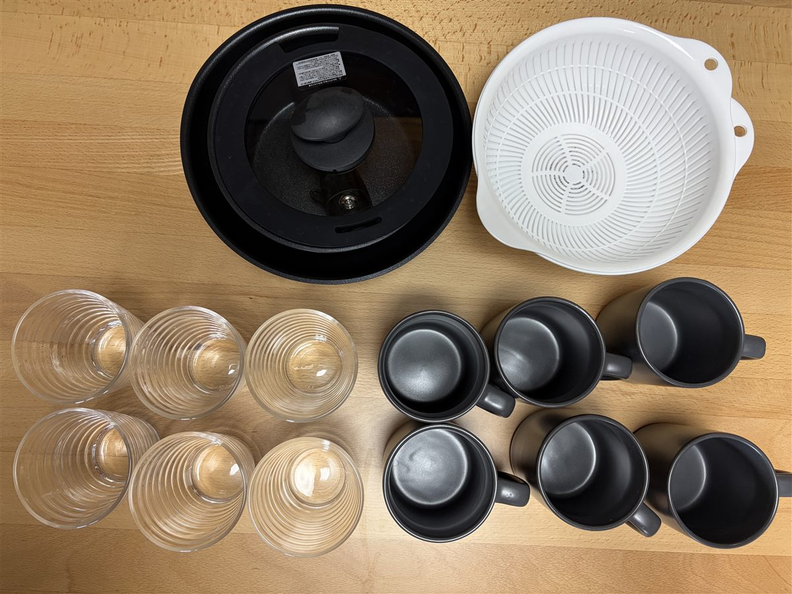
お鍋やグラスも、最小限Pots and glasses, kept to the minimum
お鍋、ザル、マグカップ、グラスを、必要最小限だけ備えています。Just a pot, a strainer, mugs and glasses—the bare minimum.
| 定員Capacity | 6名さま（7〜8名さまはご相談ください）6 guests (7–8 possible on request) |
|---|---|
| 間取りLayout | 1階：ダイニングキッチン＋和室／2階：和室1F: dining kitchen + tatami room / 2F: tatami room |
| 寝具Bedding | お布団（1階・2階に、それぞれ4人分）Futons (for four on each of the ground and second floors) |
| 設備Facilities | キッチン／冷蔵庫／電子レンジ／エアコン／Wi-Fi（すべて仮）Kitchen, fridge, microwave, air conditioning, Wi-Fi (all TBC) |
| チェックイン／アウトCheck-in / out | 15:00 / 11:00 |
| 駐車場Parking | 宿に専用駐車場はありません。徒歩1分ほどの「ニッシンパーク 忍町駐車場」（現在 24時間 500円）をご利用ください（詳細は「アクセス」）。No parking at the house. Nearby “Nisshin Park Shinobumachi” (currently ¥500 per 24 hours, about a one-minute walk) is recommended (see Access). |
06 — HOW TO STAY
フロントはありません。There is no front desk.
チェックインはスマートフォンだけで進みます。人を待つ時間はありません。 Check-in happens on your phone. There is no waiting around for staff.
-
事前チェックインCheck in online
ご到着前に、お手元のスマートフォンで宿泊者名簿のご記入をお願いします。Before arrival, fill in the guest register on your phone.
-
玄関で呼び出しRing at the door
玄関のドアベルを押すと、担当者と画面越しにお話しできます。Press the doorbell and you will speak with our staff by video.
-
確認Confirmation
チェックインコードをお伝えいただき、ご本人さまの確認をします。Give us your check-in code and we confirm your booking.
-
鍵を受け取るTake the key
玄関横の鍵の箱を暗証番号で開け、中の鍵でお入りください。Open the key box beside the door with your code and let yourself in.
ご滞在中のお困りごとは、室内の専用電話から24時間ご連絡いただけます。 A dedicated phone inside the house connects you to us 24 hours a day.
07 — RESERVATION
料金・ご予約Rates & Booking
オープニング価格（2026年10月のご宿泊）Opening rate (stays in October 2026)
¥19,800
1棟1泊あたり（税込）／6名さままで同じ料金です Per house, per night, tax included. Same rate for up to six guests.
11月以降のご宿泊は通常料金になります。曜日・時期により変わりますので、予約ページでご確認ください。 From November the standard rate applies. It varies by day and season—please check the booking page.
空室状況と料金は予約ページでご確認いただけます。 Availability and rates are shown on the booking page.
08 — ACCESS
アクセスAccess
| 住所Address | 兵庫県姫路市忍町189189 Shinobumachi, Himeji, Hyogo |
|---|---|
| 電車By train | JR姫路駅から徒歩10分10 min walk from JR Himeji Station |
| 姫路城Himeji Castle | 徒歩圏内（所要時間は確認中）Within walking distance (time TBC) |
| 駐車場Parking | 宿から徒歩1分ほどの「ニッシンパーク 忍町駐車場」が便利です（現在 24時間 500円）。Googleマップで開く → 宿が管理する駐車場ではありません。料金・空き状況は現地の表示をご確認ください。“Nisshin Park Shinobumachi” parking, about a one-minute walk from the house, is the most convenient (currently ¥500 per 24 hours). Open in Google Maps → This lot is not run by us. Please check the on-site signs for current rates and availability. |
| お問い合わせContact | 079-226-3714 |
よくあるご質問FAQ
何名まで泊まれますか？How many people can stay?
6名さまが基本です。1棟まるごとの貸し切りですので、他のお客さまと顔を合わせることはありません。7〜8名さまでのご利用をご希望の場合は、ご予約の前にお電話（079-226-3714）でご相談ください。Six guests is the standard. You have the whole house to yourselves. For parties of seven or eight, please call us (+81-79-226-3714) before booking.
キャンセル料はかかりますか？What is the cancellation policy?
ご宿泊料金に対して、次の割合でキャンセル料をいただきます。無断キャンセル 100%／当日 100%／1〜3日前 50%／4〜7日前 20%／8〜14日前 10%。15日前までのお取り消しは無料です。Cancellation fees, as a percentage of the total: no-show 100%, same day 100%, 1–3 days before 50%, 4–7 days 20%, 8–14 days 10%. Free of charge 15 days or more in advance.
食事はつきますか？Are meals included?
お食事はご用意していません。歩いてすぐの場所にお店がたくさんあります。台所で作っていただくこともできます。No meals are served. There are many places to eat within a short walk, and you are welcome to cook in the kitchen.
夜遅くに帰っても大丈夫ですか？Can we come back late at night?
お帰りの時間に決まりはありません。ただし住宅地ですので、玄関の前や道でのお話し声にはご配慮をお願いします。There is no curfew. This is a residential street, so please keep your voices down outside the house.
車で行けますか？Can we come by car?
宿に専用の駐車場はありません。徒歩1分ほどの「ニッシンパーク 忍町駐車場」（現在 24時間 500円）をご利用ください。場所はこちらです。料金・空き状況は現地の表示でご確認ください。The house has no parking of its own. Please use “Nisshin Park Shinobumachi” parking, about a one-minute walk away (currently ¥500 per 24 hours). See the location. Please check the on-site signs for current rates and availability.
子どもと一緒でも泊まれますか？Can we stay with children?
はい。畳のお部屋ですので、小さなお子さまとも過ごしやすい造りです。Yes. The tatami rooms suit families with small children.